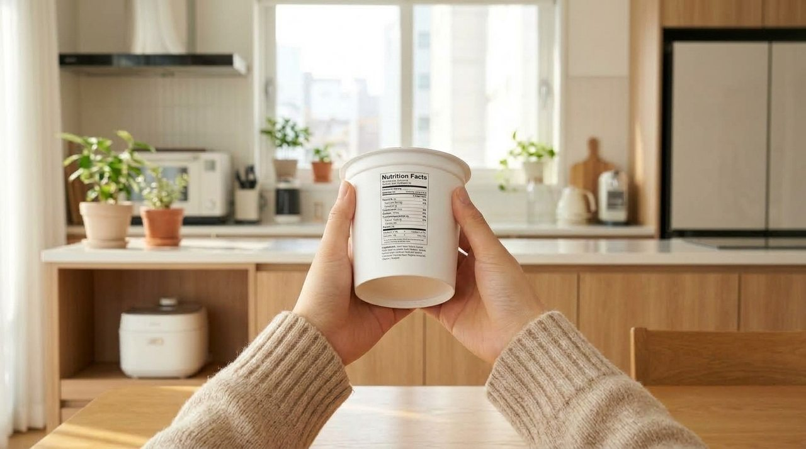
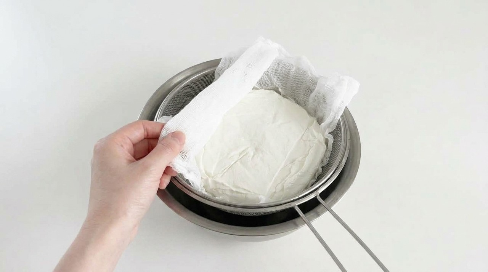
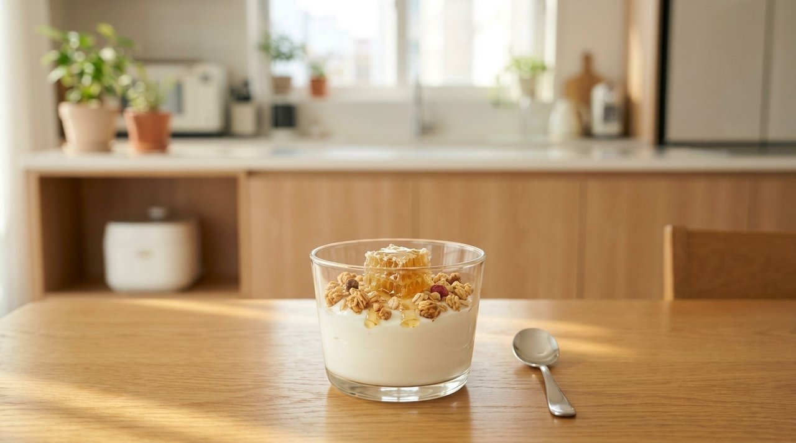
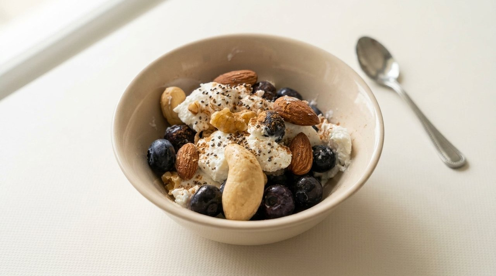

“다이어트 간식으로 매일 먹었는데?” 그릭요거트 먹고 뱃살 늘어난 의외의 원인
체중 관리를 시작하면서 식사 대용이나 가벼운 간식으로 그릭요거트를 챙겨 드시는 분들이 꾸준히 늘고 있습니다.
기존 플레인 요거트보다 단백질 밀도가 높고 든든한 포만감을 제공한다는 점이 널리 알려지며 건강 식단의 대명사로 자리 잡았습니다.
하지만 적지 않은 분들이 "밥 대신 요거트를 꼬박꼬박 챙겨 먹는데 왜 복부 둘레는 줄어들지 않을까?"라는 고민을 토로하십니다.
건강한 식품이라는 인식 뒤에 숨겨진 제조 공정의 차이와 과도한 첨가물의 함정을 간과했기 때문입니다.
다이어트 건강식의 대명사 그릭요거트가 체중 증가를 부르는 배경
전통 그리스식 요거트는 원유를 발효시킨 후 자연적인 여과 공정을 거쳐 수분과 액체 유청을 분리해 냅니다.
이 과정에서 단백질이 고밀도로 압축되며 질감이 부드럽고 단단해지는 특성을 지니게 됩니다.
그러나 대중적인 인기가 높아지면서 시중에는 제조 원가를 낮추기 위해 변형된 공정을 적용한 제품들이 다수 유통되고 있습니다.
유청을 실제로 짜내지 않고 점성을 높여주는 첨가물을 혼합하여 외형적인 꾸덕함만 구현한 사례가 대표적입니다.
이러한 제품들은 겉보기에는 고단백 발효유처럼 보이지만, 실제 영양 구성을 살펴보면 단백질보다 탄수화물과 지방 함량이 높아 식단 관리에 차질을 빚게 만듭니다.

그리스 전통 여과 방식과 인위적 증점제 첨가 제품의 결정적 차이
정통 스트레인드(Strained) 여과 방식은 우유에서 맑은 유청을 물리적으로 걸러내기 때문에 원유 투입량 대비 최종 생산량이 약 3분의 1 수준으로 줄어듭니다.
수분과 함께 젖당 성분이 자연스럽게 배출되면서 고농축 단백질만 남게 되는 구조입니다.
반면 일부 시판 가공 요거트는 수율 감소를 피하기 위해 원유에 펙틴, 젤라틴, 변성전분, 한천 등을 넣어 걸쭉하게 굳힙니다.
원재료명에 이러한 증점제가 표기되어 있다면 전통 여과 방식이 아니라 인위적으로 점도를 형성한 제품으로 분류됩니다.

| 구분 (100g 기준) | 정통 스트레인드 그릭 | 인위적 그릭 스타일 | 일반 플레인 요거트 |
|---|---|---|---|
| 제조 원리 | 면포 및 필터 여과 유청 분리 | 증점제(펙틴·전분) 혼합 굳힘 | 원유 발효 후 수분 유지 |
| 평균 단백질 | 9.5g ~ 12.0g (고단백) | 4.5g ~ 6.0g (보통) | 3.5g ~ 4.0g (기본) |
| 평균 당류 | 1.5g ~ 2.2g (저당) | 6.0g ~ 9.0g (가당 혼합) | 7.0g ~ 8.5g (유당 잔류) |
| 유당 소화 부담 | 유당 대폭 배출로 편안함 | 유당 잔류로 팽만감 가능 | 유당 민감자 주의 필요 |
성분표 라벨에서 3초 만에 판별하는 단백질과 당류 황금 비율
제품을 선택할 때 무엇보다 명백한 기준은 포장지 뒷면의 원재료명과 영양성분표를 확인하는 것입니다.
바람직한 제품은 원재료 표기란에 '원유(우유), 유산균' 딱 두 가지만 기재되어 있으며, 유화제나 인공 감미료가 배제되어 있습니다.
영양성분 수치에서는 100g당 단백질 함량이 8g 이상인지, 당류는 2g 안팎인지 대조해 보아야 합니다.
단백질 수치가 당류 수치보다 최소 3배 이상 높은 구성을 갖추고 있을 때 순수한 무가당 발효유의 효용을 기대할 수 있습니다.
벌집꿀과 시판 그래놀라가 초래하는 단순당 과다 섭취의 맹점
올바른 무가당 그릭요거트를 마련했더라도 섭취 과정에서 곁들이는 곁들임 재료(토핑)에 의해 열량이 급증하는 경우가 흔합니다.
신맛을 누그러뜨리기 위해 벌집꿀이나 조청, 캐러멜 시럽을 듬뿍 두르면 한 그릇의 당류 함량이 급격히 상승합니다.
시판 그래놀라 또한 곡류를 결합하기 위해 기름과 당밀을 첨가해 구워내는 제품이 많아 소량 섭취로도 200kcal 이상의 열량이 더해집니다.
건과일이나 초콜릿 조각까지 추가될 경우 한 끼 식사량을 뛰어넘는 탄수화물과 지방을 섭취하게 되므로 각별한 주의가 요구됩니다.

| 토핑 구성 방식 | 1회 제공량 | 열량 (kcal) | 단순당 및 혈당 영향 |
|---|---|---|---|
| 벌집꿀 & 시판 그래놀라 | 꿀 25g + 그래놀라 50g | 약 340 kcal | 단순당 급증, 혈당 변동성 확대 |
| 설탕 절임 건크랜베리 & 초코 | 건과일 25g + 시럽 10g | 약 150 kcal | 인슐린 분비 촉진, 체지방 축적 요인 |
| 구운 견과류 & 생 블루베리 | 아몬드·호두 15g + 베리 30g | 약 105 kcal | 불포화지방산·안토시아닌, 혈당 안정 |
| 치아씨드 & 계피 파우더 | 씨앗 5g + 시나몬 소량 | 약 25 kcal | 수용성 식이섬유 풍부, 완만한 소화 |
혈당 부담을 덜어내고 온전한 단백질을 흡수하는 현명한 섭취 수칙
그릭요거트를 다이어트와 건강 유지에 온전히 활용하기 위해서는 1회 섭취량을 80g에서 100g 안팎으로 조절하는 원칙이 필요합니다.
정통 여과 요거트는 단백질뿐 아니라 유지방도 농축되어 있으므로 무제한 섭취는 피하는 것이 바람직합니다.
단맛을 대신하여 소금기 없이 볶은 아몬드나 호두를 소량 으깨어 넣으면 씹는 저작 작용을 통해 뇌에 포만 신호를 보낼 수 있습니다.
여기에 당 지수가 낮은 신선한 블루베리나 수용성 섬유질이 풍부한 치아씨드를 더하면 혈당 급상승 없이 오랜 시간 맑은 활력을 유지하는 든든한 식단이 완성됩니다.

- 숟가락이 서는 꾸덕함에만 주목하지 말고, 원재료명에 펙틴이나 변성전분 없이 '원유와 유산균'만 들어있는지 확인해야 합니다.
- 영양성분표에서 100g당 단백질이 8g 이상이고 당류가 2g 안팎인 고단백 무가당 제품을 선택하는 습관이 중요합니다.
- 벌집꿀과 시판 그래놀라 대신 구운 견과류와 생 블루베리, 치아씨드를 토핑으로 곁들여야 혈당 안정과 포만감을 지킬 수 있습니다.
#그릭요거트 #그릭요거트다이어트 #무가당그릭요거트 #그릭요거트칼로리 #그릭요거트단백질 #요거트토핑 #다이어트식단 #단백질간식 #혈당관리 #에디터혀니